Non tutti conoscono le due stue (chiuse) di Tralba a Moggio: sono le stue meglio conservate in regione. Sono le ultime testimonianze di un lavoro molto pericoloso, che mai piú tornerà. La costruzione della seconda stua risale al 1830 circa e la prima addirittura attorno al 1780. Sono realizzate con tronchi di pino nero, che è pressoché inalterabile in certe condizioni; veniva pressato del muschio fra i tronchi in modo da avere piena impermeabilità della struttura.
Sono opere monumentali e di grande ingegno: visitarle dal vivo è stato davvero emozionante. Colpisce inoltre la severità del luogo assolutamente remoto ove si trovano.
Le stue servivano per la fluitazione dei tronchi: in agosto e settembre venivano tagliati (a mano) gli alberi (sulla Costa della Sega e in minor misura sui contrafforti del Pisimoni in sx orografica del rio Tralba) e in maggio-giugno venivano calati nell'alveo a valle della stua. Chiuso il portellone, in un paio d'ore il bacino a monte si riempiva; aperto poi di colpo (operazione delicata e pericolosa!), la furia dell'acqua esplodeva spingendo a valle tutti i tronchi. Questi venivano poi raccolti alla confluenza con i fiumi principali (Fella, Tagliamento, ecc...).
Le stue erano posizionate in punti ben precisi, cioè in concomitanza di bruschi cambi di pendenza del rio: ripido e incassato a valle dell'opera, pianeggiante a monte (per immagazzinare piú acqua possibile). La stua inferiore lavorava in alternanza a quella superiore.
I monti di Moggio sono una meraviglia per l'escursionismo esplorativo. C'è il sentore diffuso secondo cui il lato selvaggio della montagna friulana risieda solo in Destra Tagliamento; credo però che ciò sia dovuto al fatto che la Sinistra Tagliamento la conoscono davvero in pochi! Rarissime le persone che sanno cosa possa celarsi dietro a luoghi molto frequentati come ad esempio Stavoli, la val Alba e la val Nuviernulis, giusto per rimanere nel territorio di Moggio.
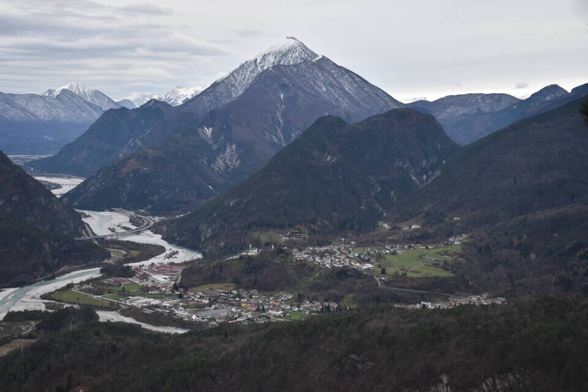Noi dobbiamo ringrazione A. Armellini, l'autore del libro dei Trois Neris, per averci «iniziato» a questi luoghi.
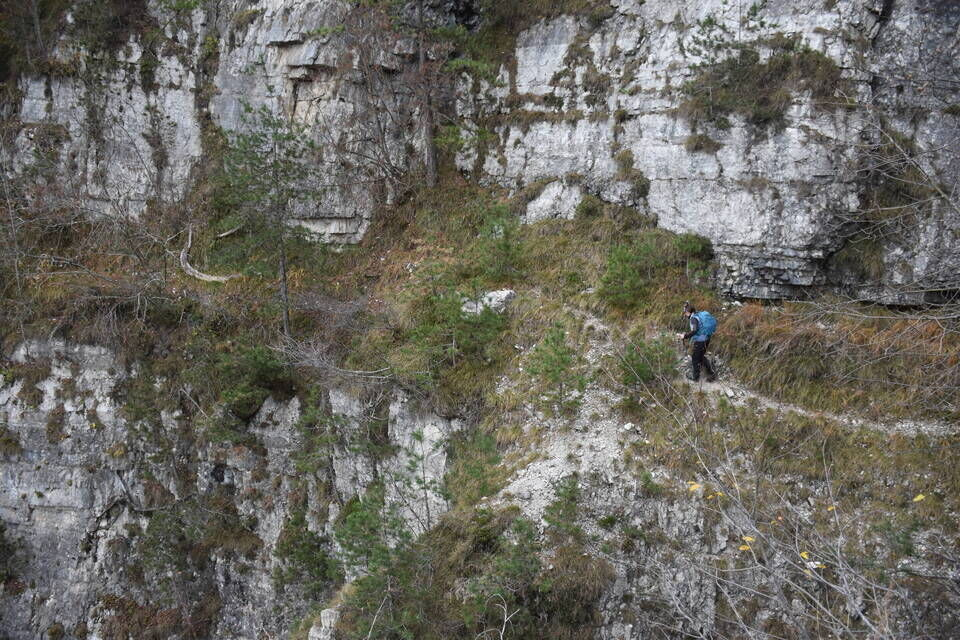È tempo di concludere la traversata che avevamo iniziato quasi due anni fa: da Ovedasso alla Stua alta di Tralba lungo il versante sx orografico dei torrenti Alba e Tralba.
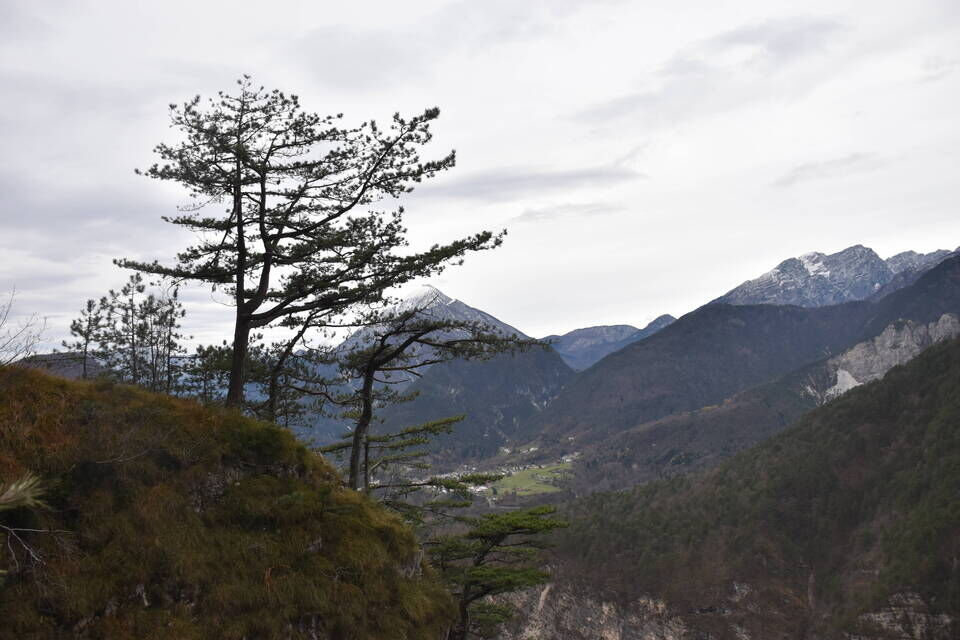Cinque ore continuative su cenge! Non penso ciò abbia eguali in Friuli.
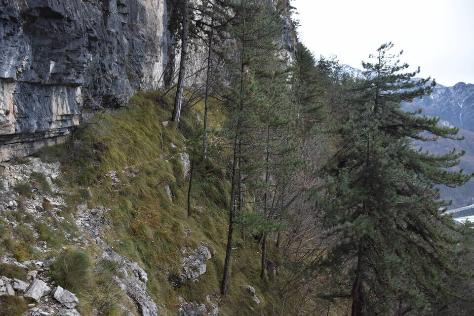A picco sul Tralba, sovrastato dalla Costa della Sega. La prima parte di questa è detta Cuel dai Muarts, in ricordo di una sciagura, la quale probabilmente segnò la fine dell'utilizzo delle stue di Tralba (fine '800 - inizio '900): sette menaus vennero travolti dall'onda dovuta all'apertura improvvisa della prima stua. «Il cedimento del portellone della chiusa avvenne durante la sosta meridiana, quando i menaus intenti alla sistemazione dei tronchi lungo il basso corso del rio, si trovavano nel tratto dell'alveo reso piú infido dalla alternanza di salti di roccia e di profondi catini d'acqua» (A. Simonetti).
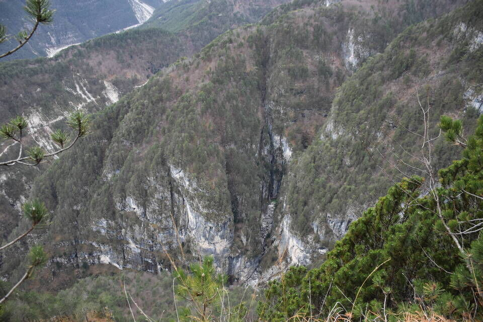Al cospetto degli enigmatici contrafforti a Nord-Ovest del Pisimoni: li guardavo tempo addietro percorrendo la Cengle Alte, ora ci passo in mezzo per cenge.
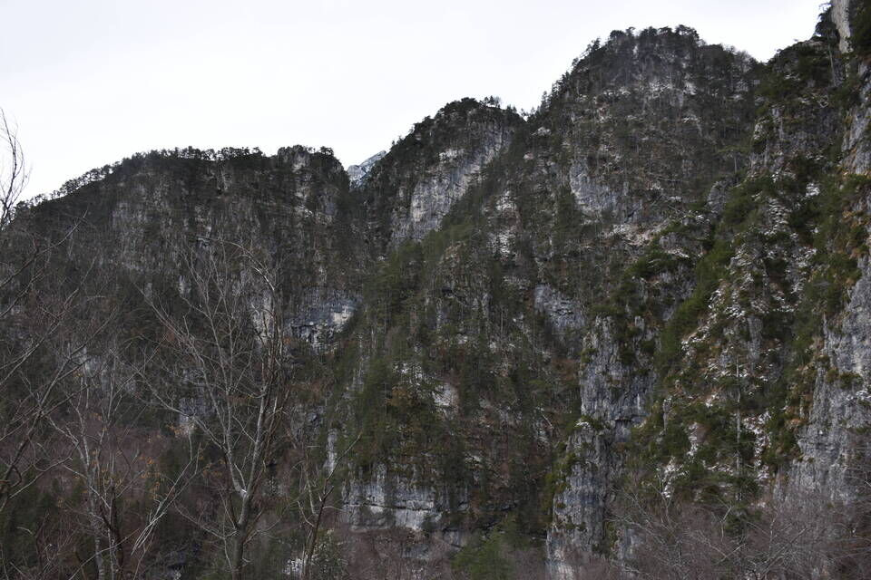Ecco i contrafforti visti dai «cenglòns» (foto d'archivio; collegamento stavolo Rosean - casera Costis). Quello a sx è il riu dai Sdarnàz, a dx il bacino del Tralba.
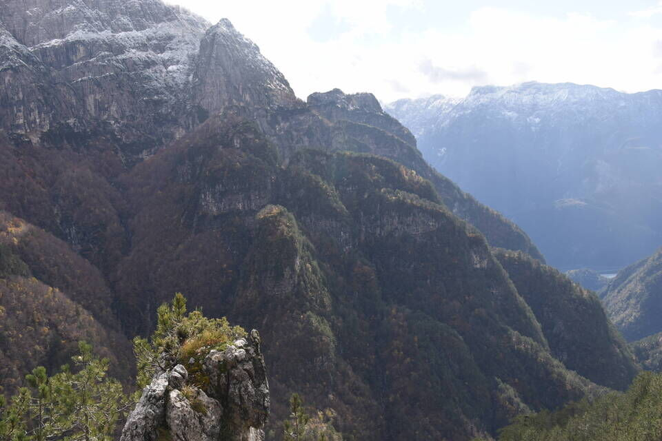L'ambiente è eccezionalmente selvaggio, ma le foto rendono poco in questo caso. Forse è giusto cosí.
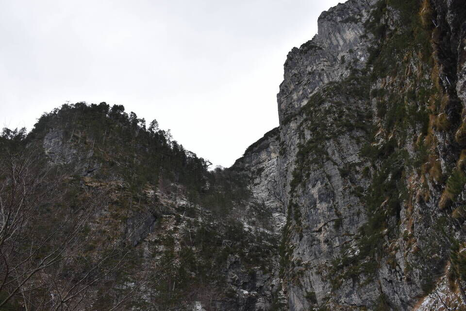Rio che scende dalla q1292 Tabacco e che confluisce nel Tralba: che sia questo il riu neri?
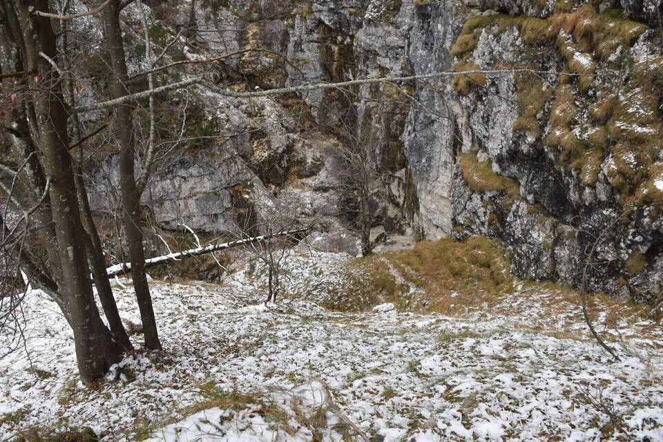 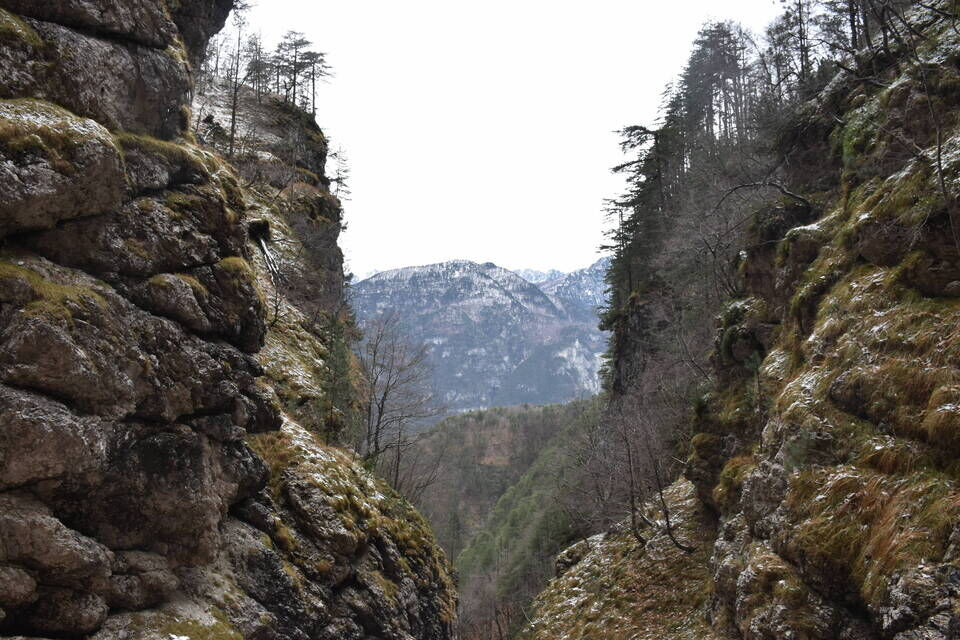 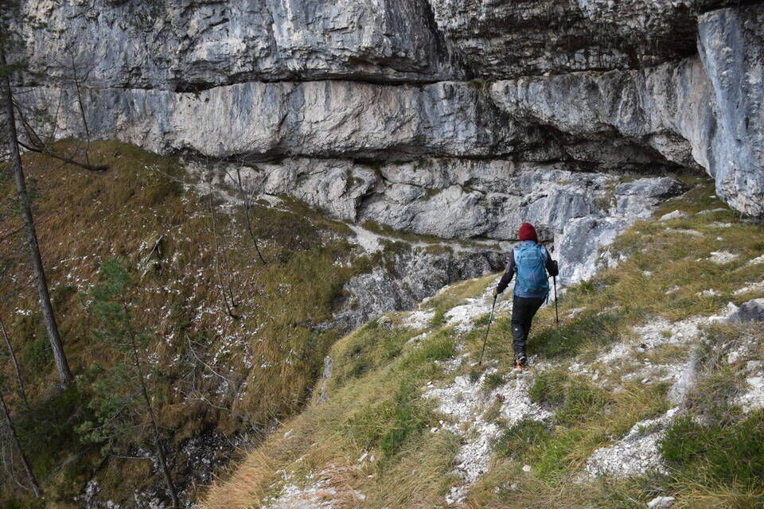Ponticello crollato: ora tocca arrampicare. È confortante ed emozionante trovare un'opera umana in luoghi ora completamente dimenticati. Mi sovviene quanto scrissi a suo tempo a proposito di Fedevèiz.
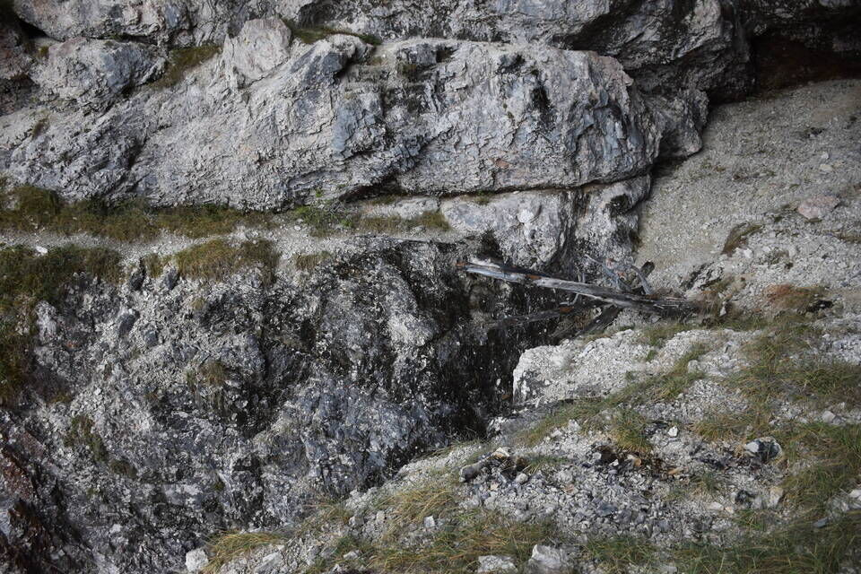Perché ci appassiona il «selvaggio»? Sembra ovvio: per uscire dal mondo antropizzato che ormai ci travolge. Ma credo che il vero fascino del selvaggio risieda proprio nel contrario di ciò, ovvero nella ricerca dell'Uomo dove questo sembra non esserci.
Non è emozionante salire un bosco di faggi senza sentiero, ma lo è trovare casera Fedevèiz sperduta in mezzo al nulla; cosí come il bello non è trovare le fatte dei camosci in cima, ma trovare vecchi tagli sotto una mugheta ora impenetrabile. Ci emozioniamo a scoprire che qualcuno prima di noi è passato in certi posti, oppure che qualcuno ha lavorato e vissuto in luoghi ora sperduti; ritrovare l'Uomo è la nostra natura e non possiamo trascenderla.
Il «selvaggio vero» non ci appartiene.
Finalmente scendiamo nel riu dai Sdarnàz: di fronte vediamo il bacino terminale del Tralba, con lassú il Cuel da le Fratte e la conca di casera Crostis.
Sdarnàz o Stramàz: par furlàn dovrebbe essere il materasso di paglia. Che il rio si chiami così perché nelle vicinanze c'era un cason usato dai menaus?
I piú remoti recessi del Pisimoni: circa 200-300 metri piú in alto passa la Cengle Alte. Non pare troppo arduo congiungersi salendo queste pale boscose.
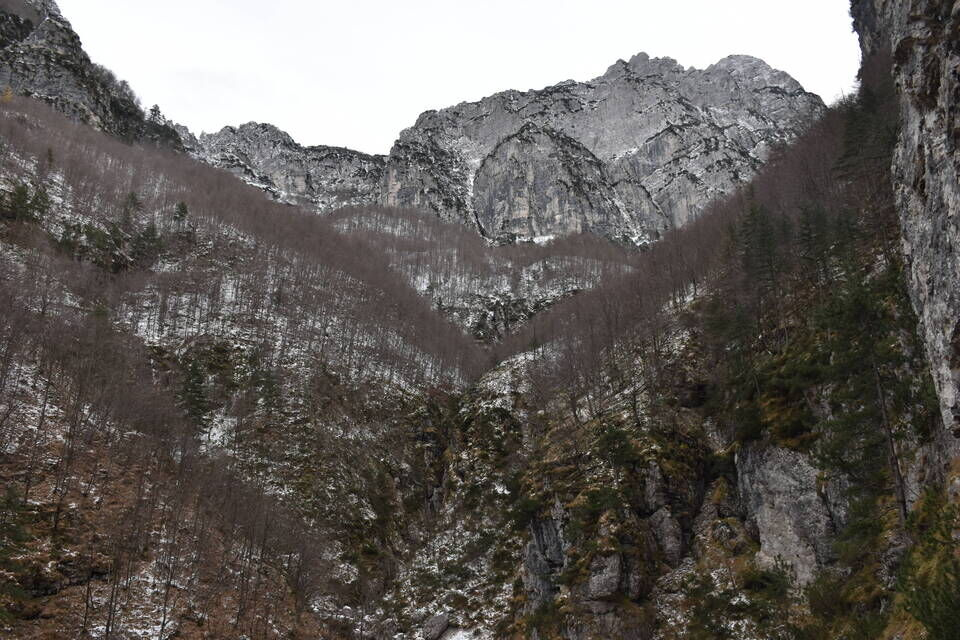Scendiamo alla Stua Alta: vederla per la prima volta è stato davvero emozionante.
Dettaglio della cassice, ovvero la gabbia costituita da tronchi incrociati e riempita di pietre.
Alcuni particolari costruttivi: larghezza di base 13 metri, larghezza in sommità 36 metri (!), altezza verso monte 5.8 metri, spessore medio 4.7 metri, capienza stimata bacino a monte 6500 metri cubi (fonte Simonetti).
Per confronto, qualche fotografia tratta dal libro di Simonetti. Esse sono riferite alla prima stua, che però condivideva la stessa struttura di costruzione con quella alta.
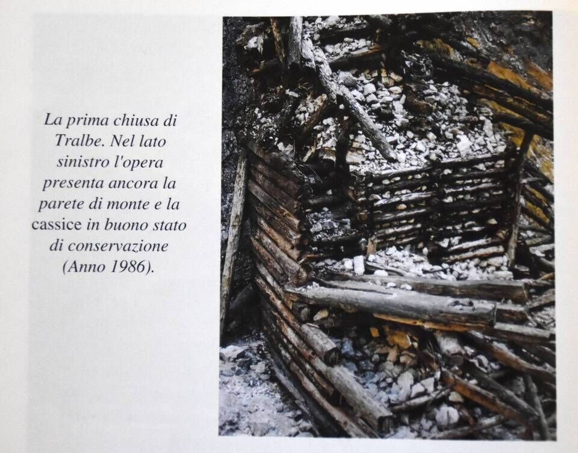 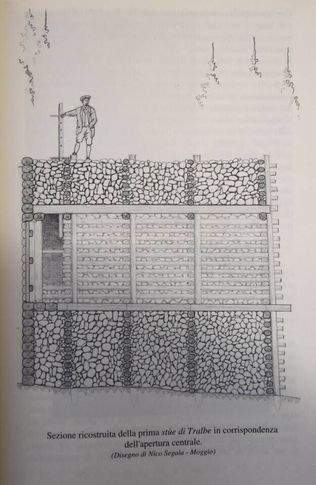Vari dettagli purtroppo non sono più presenti, come la plane sot e la plane sore (tronchi che delimitavano in basso e in alto la bocca della stua) ove si trovava anche la sede del gardiníli (il cardine ligneo che permetteva l'apertura e la chiusura della stua).
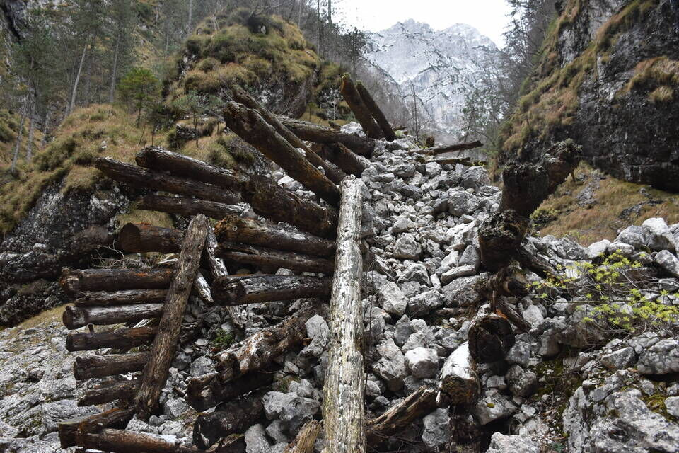Se ciò che resta ti pare poca cosa, pensa che la stua giace qui abbandonata alle furie delle intemperie da piú di cent'anni. Antonio Armellini mi riferisce che fino ai primi anni '90 le due stue erano ancora in ottimo stato, come del resto testimoniano le foto di Simonetti, ma le alluvioni di quegli anni hanno fatto grossi danni.
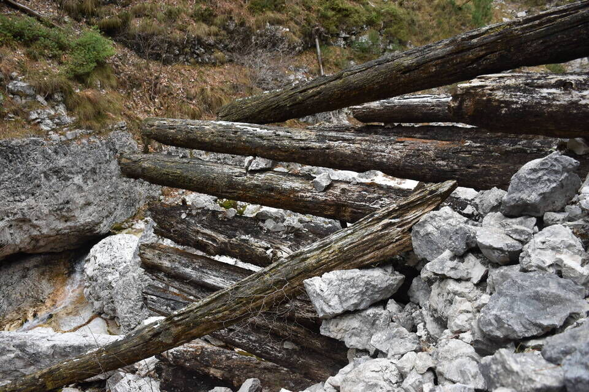Chiodo ligneo.
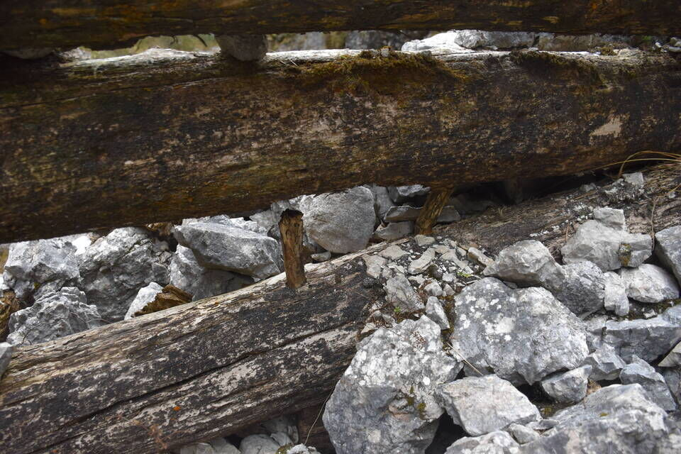Meglio muoverci perché il proseguo è ancora tutto una incognita per noi.
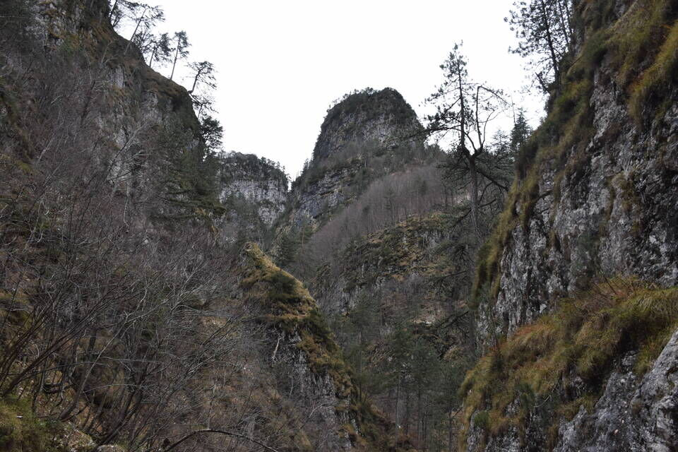Risalito il rio Tralba per qualche minuto abbiamo salito una pala boscosa per un centinaio di metri fino ad incrociare il sentiero trasversale che porta alla Costa della Sega.
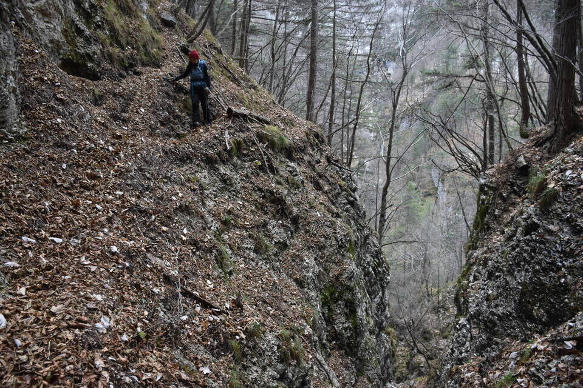Un ultimo sguardo al Pisimoni Ovest: in centro foto, a metà parete, la I° cengia Ovest, con a dx la forcelletta del Ciuc de la Muinie.
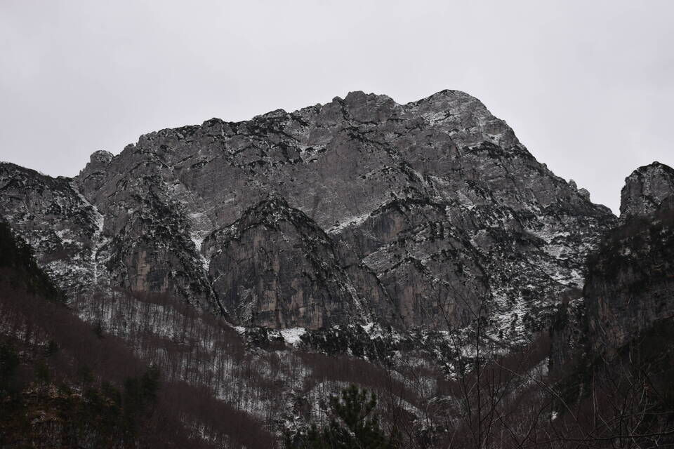Il sentiero «normale» per la stua alta è sempre evidente, anche se decisamente meno battuto di quello della stua bassa (quest'ultimo parallelo ma piú basso; viene usato sia per l'accesso all'opera di presa della cartiera sia dai torrentisti). Per i curiosi: il sentiero inizia da una selletta q950 c. sulla Costa della Sega. Da lí, arrivati noi ovviamente in senso inverso, siamo scesi direttamente alla diga sul rio Alba lungo un sentiero che percorre il versante Ovest della Costa. Tale sentiero è poco evidente, ma per fortuna non abbiamo commesso errori e ho pure effettuato diversi tagli su rami. Conviene forse farlo in discesa, comunque in salita il bivio si trova una decina di minuti dalla diga, dopo aver attraversato a semicerchio un rio seguendo il sentiero della presa dell'acqua. Arrivati ad una zona con prati dove la traccia sparisce, bisogna salire tutto il prato ritrovando in alto il sentiero che va seguito senza incertezze fino alla suddetta selletta.
In alternativa, sappiate che raggiunta la displuviale (meridionale) della Costa della Sega tramite il sentiero della presa dell'acqua, è possibile risalire tutta la Costa.
Invece riguardo al lunghissimo percorso che abbiamo seguito per arrivare alla stua alta, la faccenda è enormemente piú complessa e non è questo lo spazio adatto per una descrizione. È cosa riservata a persone molto appassionate e motivate. Nel caso foste interessati non esitate a contattatarmi in privato.
Sarebbe stato bello tornare ad Ovedasso chiudendo un anello, scendendo per il Cuel dai Muarts arrivando a stâli dal Gnazio, sfruttando l'impegnativo itinerario esplorato e imparato il sabato precedente. Ma volevo assolutamente assistere alla serata di celebrazione del centenario del CAI di Osoppo, fondato da Umberto Tinivella. È stato ristampato il libro celebrativo Storia e Alpinismo. Era presente inoltre la nipote Umberta, la quale, con molta emozione, ha pronunciato le bellissime frasi che ho fatto mie in questo sito.
***
Foto straordinaria della stua bassa (in Alessandro Simonetti, L’antica tecnica della fluitazione del legname mediante l’utilizzo di chiuse. Le ‘stuis di Tralbe’ a Moggio Udinese, Comunità Montana Canal del Ferro-Val Canale, 1993).

***